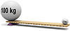

lever

Definition: A lever is a simple machine consisting of a beam or rigid rod pivoted at a fixed hinge, or fulcrum. A lever is a rigid body capable of rotating on a point on itself. On the basis of the locations of fulcrum, load and effort, the lever is divided into three types. It is one of the six simple machines identified by Renaissance scientists. A lever amplifies an input force to provide a greater output force, which is said to provide leverage, which is mechanical advantage gained in the system, equal to the ratio of the output force to the input force. As such, the lever is a mechanical advantage device, trading off force against movement.
Source: Wikipedia
Wikipedia Page (Something wrong with this association? Let us know.)
Wikidata Page (Something wrong with this association? Let us know.)